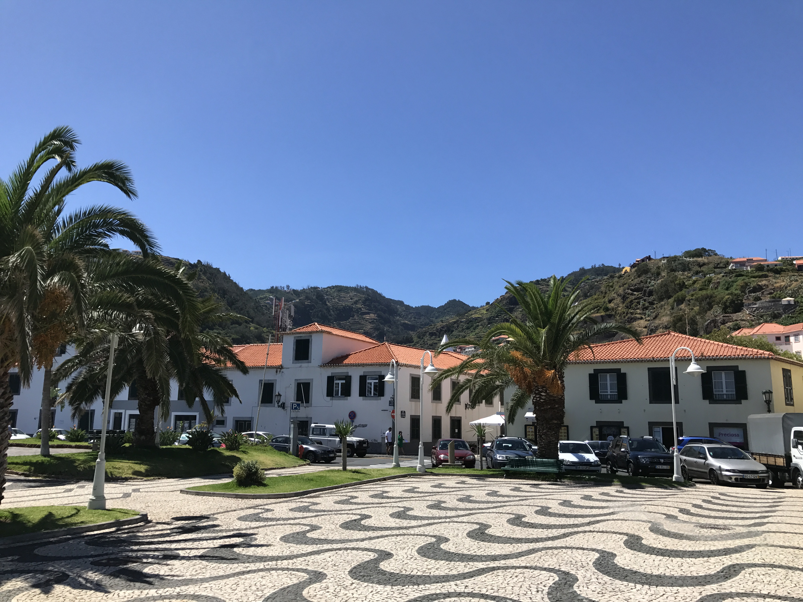

Du har måske hørt om den portugisiske ø Madeira, der egentlig rent geografisk ligger tættere på Nordafrika end på Portugal. Dog er det de færreste, som egentlig kender ret meget til øen. Mange vil nok også have svært ved at placere den på et kort. Ikke desto mindre oplever Madeira i disse år en stigende popularitet blandt turister. Det afspejles også ved at flere og flere danske rejseselskaber har valgt at inkludere Madeira som rejsemål. Madeira ligger et godt stykke ude i Atlanterhavet, 869 kilometer fra hovedstaden Lissabon og blot 579 kilometer fra Marokko i det nordvestlige Afrika. Det fortæller også lidt om, at vi her har at gøre med et sted, som ikke ligefrem er det letteste at komme til rent transportmæssigt.
En helt speciel ø
Det er dog hele den ca. 5 timer lange flyvetur værd. Det er svært at putte Madeira i én bestemt kasse. Den formår med sit både subtropiske og rå klima at være noget, som alle de andre ikke rigtigt er. Det er svært at sammenligne Madeira med noget andet i Europa eller Afrika for den sags skyld. Øen byder på lidt af hvert f.eks. i form af vulkansk aktivitet, imponerende bjergtoppe omgivet af skyer samt dybe grønne dale. Man skelner ofte mellem to forskellige klimaer på øen. Et i syd og et i nord. Det skyldes måden hvorpå øen er bygget op.
De næsten 2000 meter høje bjergskrænter på den nordlige del af øen skiller sig markant ud fra landskabet på den sydlige del, som ligger meget lavere mod havoverfladen. Nord på øen vil man også opleve langt mere nedbør pga. skyerne der omkranser bjergene. Det gør også, at denne del af øen er meget frodig, fugtig og fyldt med tæt skov. Den sydlige del kendetegnes ved mere tør og lun luft, der blæser ind fra havet. Funchal, øens hovedstad, ligger netop på den sydlige del af øen, og den er derfor et sted med behageligt klima året rundt, selv i de traditionelt varme sommermåneder, hvor en dejlig brise blæser ind fra havet.
Madeira er meget mere end sandstrande
Sandstrande er der stort set ikke nogen af på øen, men det skal heller ikke være grunden til, at du rejser dertil. Derimod er det den storslåede, bjergtagende og næsten uvirkelige natur, som folk rejser til Madeira for at opdage. Man får følelsen af at være langt væk fra det hele – langt fra hverdagens travlhed og hektiske begivenheder – det føles som dét, det netop er; en ø langt ude midt i ingenting. Ude i Atlanten. På trods af det er der dog rigeligt at tage sig til på øen. Især for de eventyrlystne. Øen er et slaraffenland for mountainbikes, bjergvandringer, paragliding, hvalsafari og en masse andet.
Madeira er især kendt for levadavandringerne. På øen findes over 1500 kilometer levadaer (kanaler), som fra midten af 1400 tallet blev hugget ind i bjergskråningerne på øen af slaver fra bl.a. Gran Canaria. Disse kanaler – eller levadaer – blev lavet med henblik på at lede regnvandet der som regel falder på bjergrige, nordlige del af øen ned til den sydlige del, hvor det regner mindre, men hvor man har brug for vandet til landbruget og til dyrkning af en lang række fødevarer. Langs levadaerne finder man små og til tider udfordrende vandrestier.